Safety Quizzes
To begin, we would need to have a basic understanding of the safety procedures, 3D printers and laser cutters in the FabLab. Quizzes were presented to us to test our understandings.
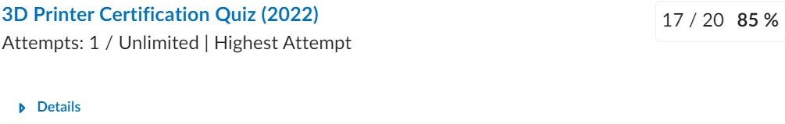
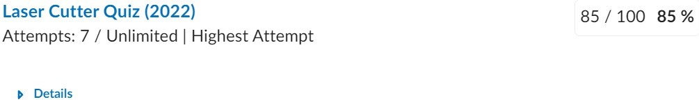
HTML & CSS (Web Programming)
To record all the efforts we have done in the class and to document the steps taken to build the project. This website has been made. This website was made using HTML and CSS, using Notepad++ as my editor. I have used my knowledge from my course and various online resourses (Youtube, W3schools, stack overflow, etc.) in order to create this.

GIMP
To photoshop our images to make them more presentable on the website, we use GIMP. It opearates similarly to Adobe Photoshop. For the lesson, we learnt how to remove the background from our photo for the "About me" page.
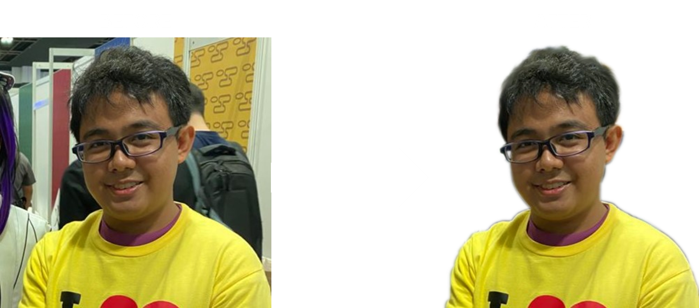
Inkscape
Inkscape is used to design our personalised logo for our website. For my logo, I hace designed a wing of an angel from a character I like in a show. It is to represent me soaring to greater heights. It also has the initials of my name to trademark it.

Fusion360
In fusion360, we learnt how sketch a basic drawing of an object and extruding it from 2D to 3D. We had 2 exercises to practise with. To add more towards it, I have also fillet the edges of exercise 2 to give it more depth and details.
Exercise 1:
Exercise 2:
After learning the basic features of creating a model in fusion360, we are tasked in creating more complicated models.
Lego Brick:
Hex Nut:
Stacked Blocks:
Mug With Handle:
3D print
For our assignment, we were tasked in creating a chess piece to 3D print. I created a knight chess piece as it is the most challenging and interesting piece to disign. This process was made by creating two peices merged into one, namely the base and the horse itself.
The base was made by creating the side from the middle radius to the outter rim as a flat pane then extruding it in a circular manner to have the base as shown. Afterwards, the horse was created by using free line sketch to follow the outline of an image of a knight piece. after tracing out the knight, it needed to be exruded to give it mass. Additional details were made on the horse by using the "Fillet" feature on the edges to smoothen it out.
Fusion360 Model:
Once the model is done, we export the model as an STL file and slice it in a software called Ultimaker_Cura. We downloaded the sliced file into an SD card reader and placed it into the 3D printer to print the knight piece.
3D Printed Knight Piece:
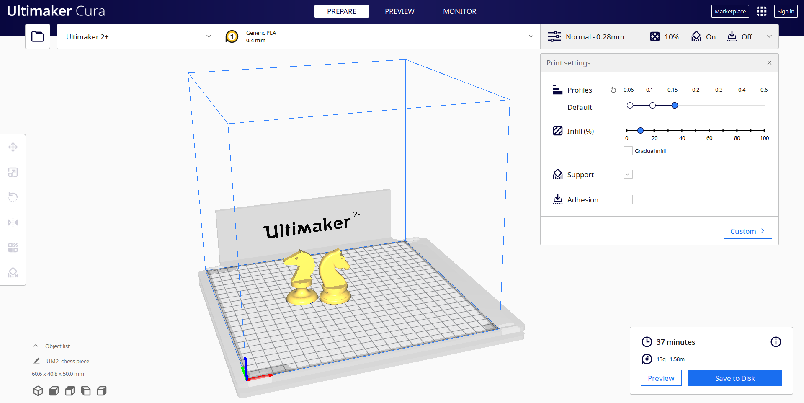With the 3D printer finished, this is the end result.
3D Printed Knight Piece:
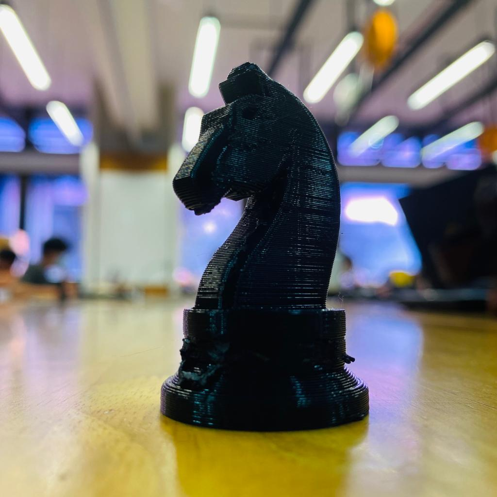For another assignment, we were tasked in creating a phone holder of our design. For the phone holder, I chose to go with a simpler yet asthetic design so as to make it less complicated.
The design takes up the shape of a dog, utilising the tail as the phone holder. The design utilises the width and height of the dog so as to balance out the wieght of the phone so it does not topple over no matter the orientation of the phone is.
Fusion360 Model:
3D Printed Phone Holder:
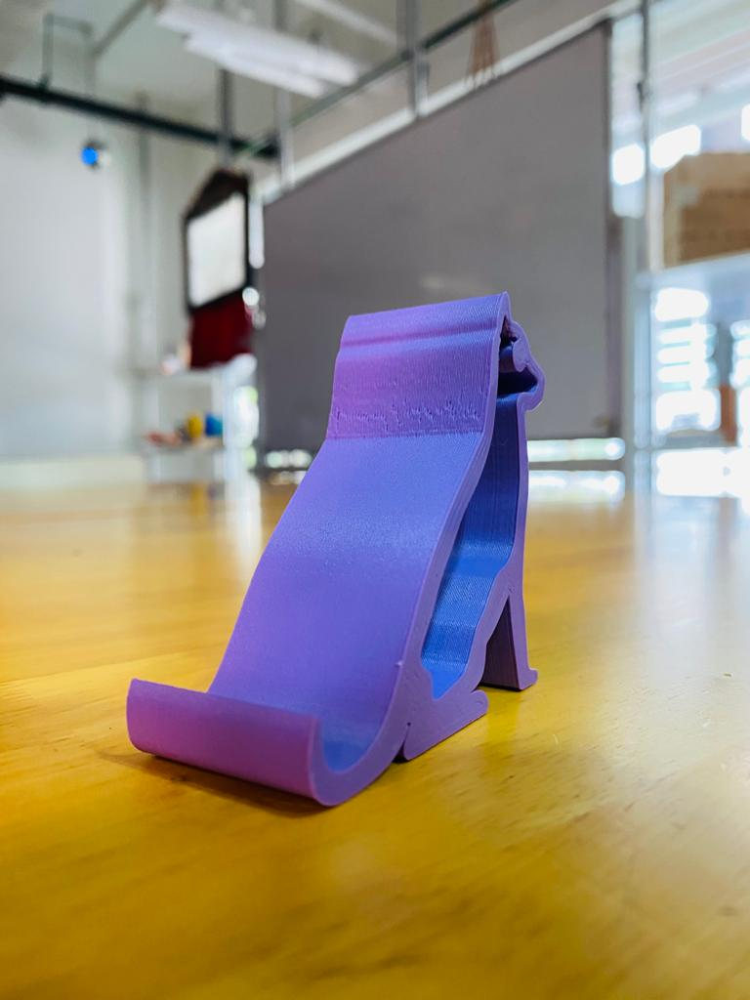 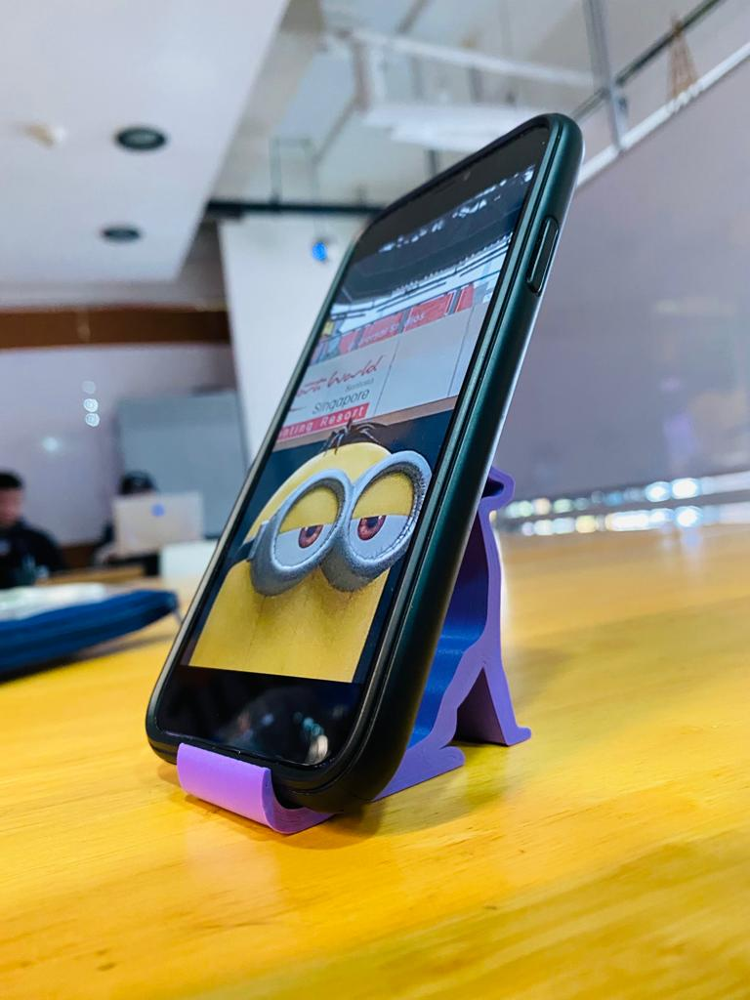laser cutting
Before needing to laser cut, we would need to create a model for it. Unlike a 3D model, we utilise a flat sketch that would be converted into a DXF file that would be used for the laser cutter to operate. For the first assignment, we were tasked to create a nametag keychain.
The design of the keychain contains my name along with a wolf logo for design which are cut off when laser cut. The floating areas within my name and the logo are connected via bridging so that they do not fall off. The inner rim was planned to be engraved onto the acrylic during laser cutting so as to make it look like it has a frame around it.
Fusion360 Model:
Fusion360 Sketch:
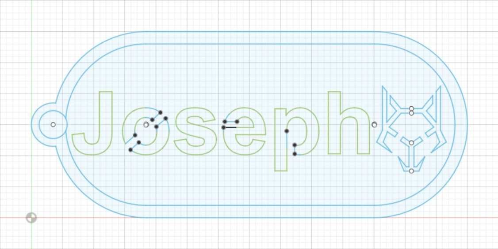For our assignment, we are tasked in creatin a small box to contain items. The box should have a functioning drawer and utilises a living hinge.
Before creating the box, I created a model of the box I had in mind onto fusion360. After finalising the design, I transferred the model into a flat sketch and added in the "living hinge" pattern to create the flexible wood on the top and utilised a "box joint" of 3mm thickness to help provide a strong joint between each sides of the box.
Box Model:
Fusion360 Sketch:
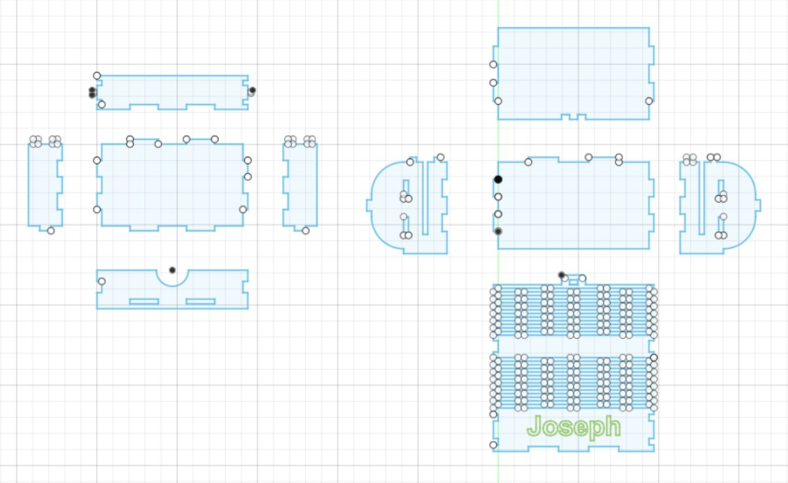Once the sketch is done, it will be saved as a DXF file and brought to the laser cutter. CorelDRAW is the software used to cut or engrave the lines in the laser cutter, using red to cut through the material and green to engrave the line. Once the lines have been configured, the laser cutter settings would be set to 3mm plywood and start cutting.
 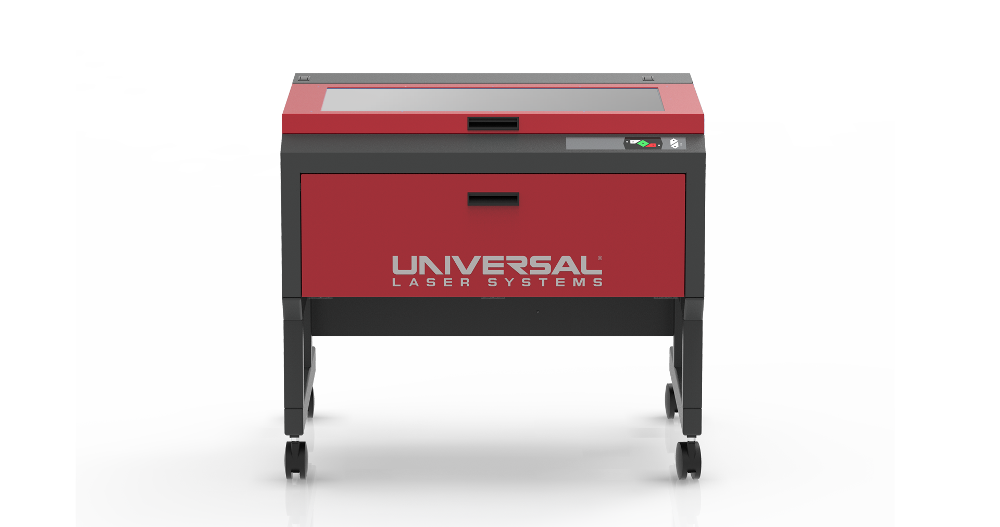
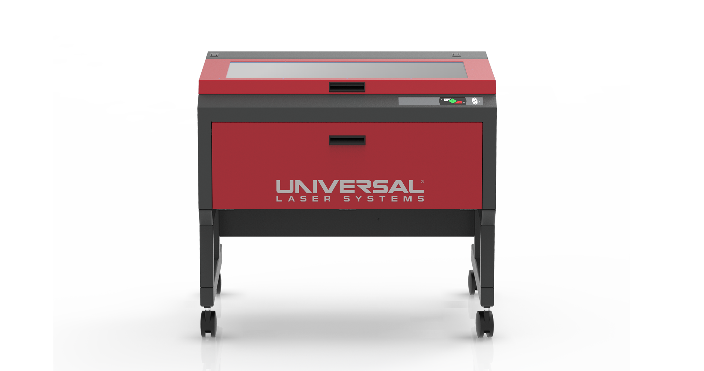
Once the pieces are cut out, it would need to be assembled. In order to add extra security within the joints, wood glue is applied to them. The following images shows all the pieces and the steps required to assemble them accordingly.
The inner drawer parts are assembeld first and wood glue is applied. While waiting for the glue to settle, The side pieces of the main box is connected to the middle piece. After the glue has settled, the inner drawer is slotted into the main box through the gap in the side pieces. After that, the bottom piece is applied at the bottom so to lock the inner drawer in its place. Lastly, the back/top piece with the living hinge is assembled.
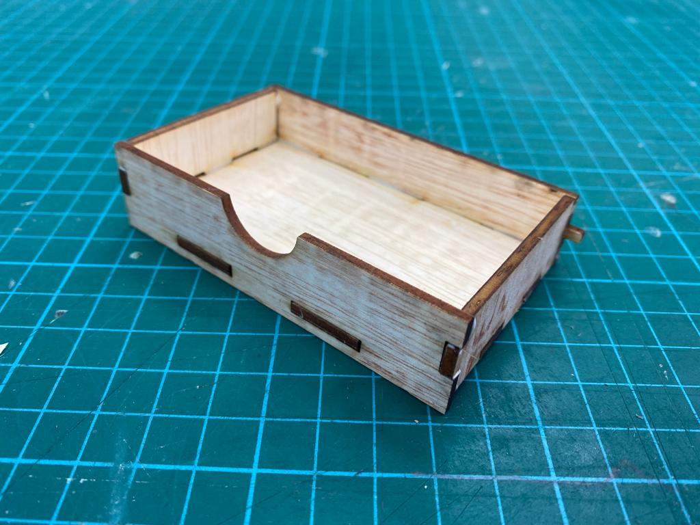
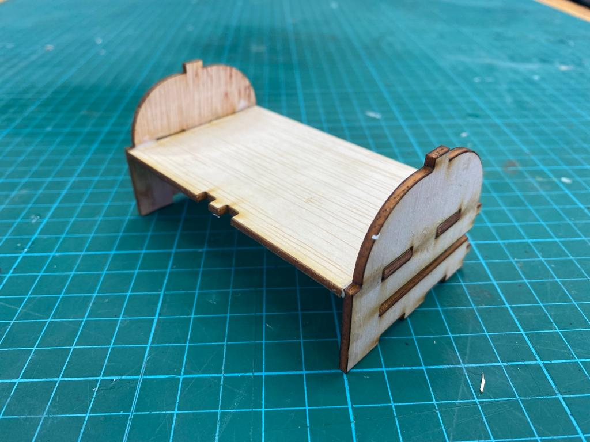
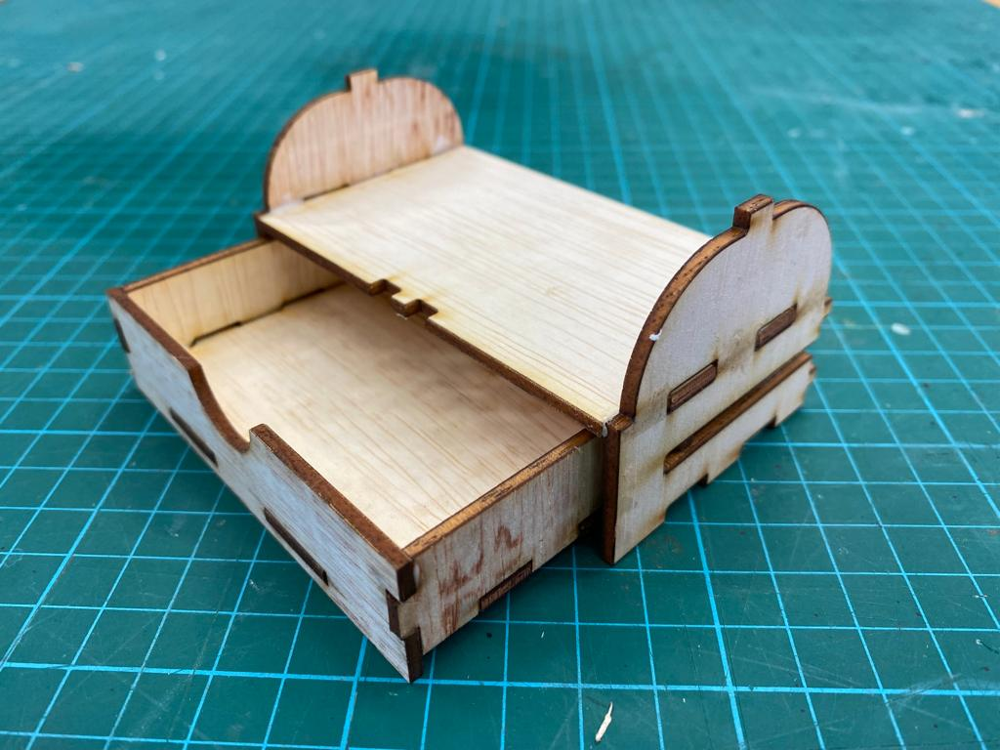
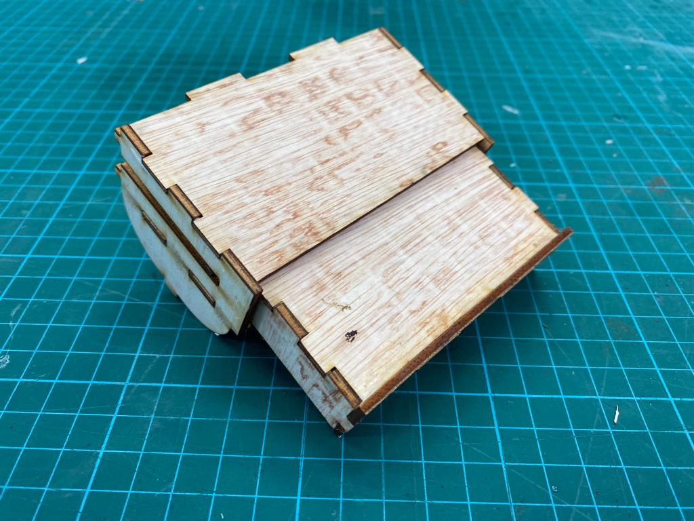
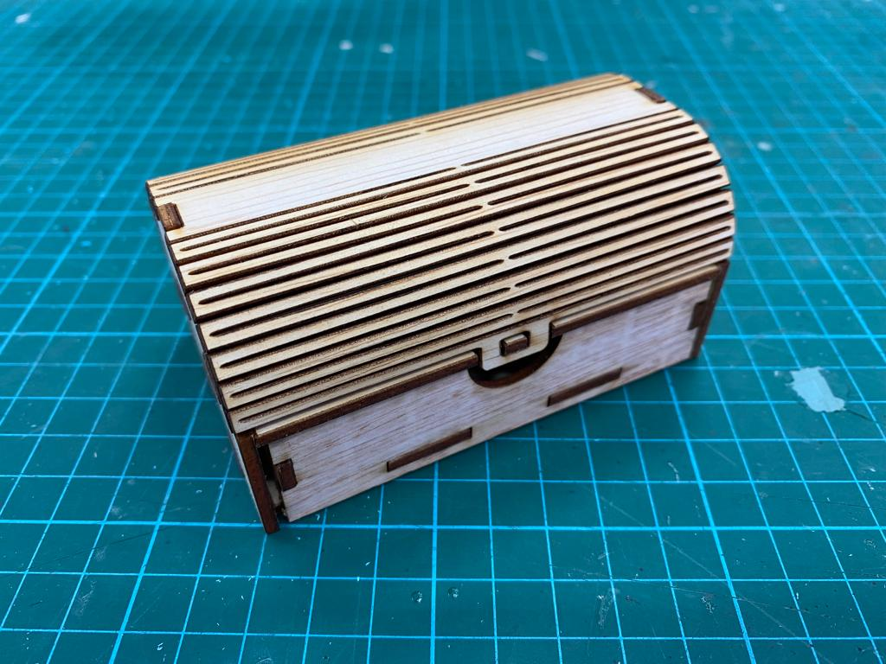
With the fully assembled box, it presents us with this box that has 2 compartments for storage; the inner drawer and pot compartment with the living hinge cover.
Programming
To learn programming, we started off by simulating a curcuit diagram on TinkerCad. We first created a simulated 7-Segment Display that turns on/off each segment via a switch.
After simulating a simple 7-Segment Display with switches, we go on a step further by coding it to continuously count down from 9 to 0. The code below is used to loop the count down segment.
The circuit diagram is altered to simulate the count down with the code. The new circuit diagram incorporates an Arduino Uno which will house the code within it.
After having a feel of the simulated programming, we went on to make a physical circuit that utilieses LED lights to create different light up patterns.
The first program made is used to program the LED to blink on and off for every second.
Foe the next program, it is made to incorporate 3 LEDs to blink from left to right then back again.